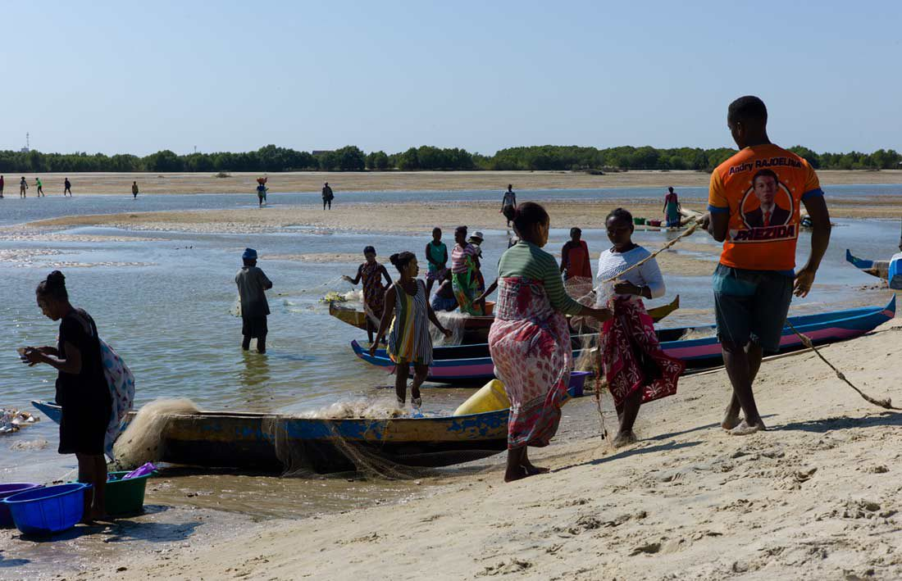
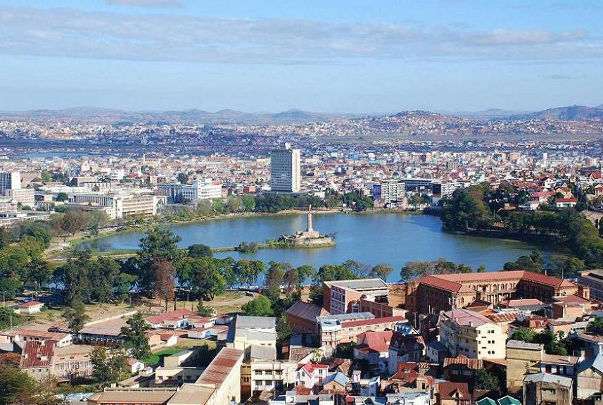
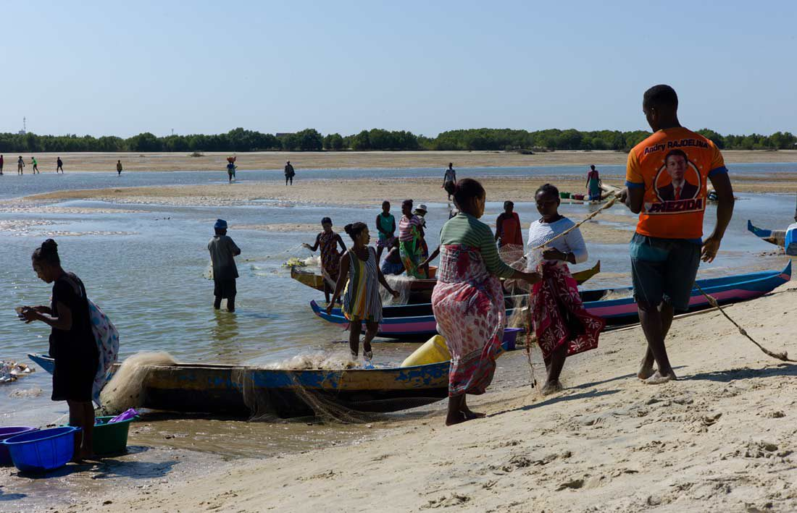
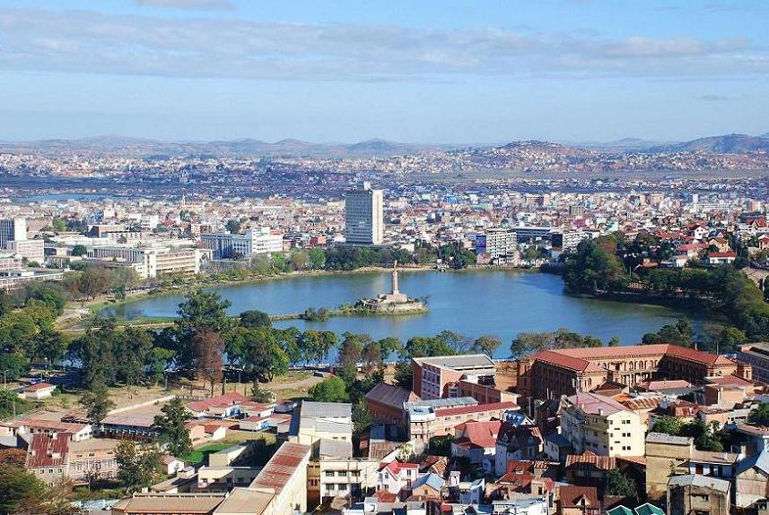

In hoogstens 13 dagen kan je Madagaskar al bekijken. Via de hoofdweg, Route National 7, die vanaf de hoofdstad naar het zuiden loopt kan je de vele facetten bekijken die Madagaskar te bieden heeft. Zo heb je ieder uur een ander uitzicht, elke twee uur een ander landschap en zie je onderweg veel van de lokale cultuur. Je reist via het regenwoud van Ranomfana NP naar de hoge toppen van bij Ambalavao en naar het Colorado van Madagakcar. Je kan in de fijnste accommodaties overnachten midden in de natuur en altijd kleinschalig. Jouw reis langs de hoofdweg van Madagaskar zal eindigen aan de kust. Je ziet er de vissersdorpen, het lokale leven, ruikt de geur van het kampvuurtje en de zilte zeelucht. Hier kom je tot rust en beleef je alle avonturen van de afgelopen dagen opnieuw en dat is zeker geen straf!
 


